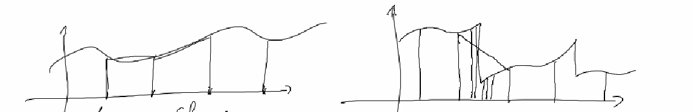
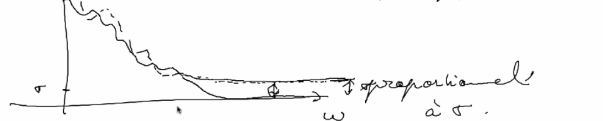

débruittage¶
problème vieux de + de 30 ans
difficultés à amélioré l’était de l’art, les recherches stagnes (possiblement résolu)
On a vu qu’il été possible de créer une décomposition d’un signal (image, son) dans une base de fourrier ou d’ondelettes.
Le choix de la base dans laquelle exprimer le signal est important en fonction du problème abordé (compression, …)
Le problème:
on dispose d’un signal et d’une observation qui est la composition de ce signal + du bruit.
On à accès à l’observation mais pas au vrai signal (on ne le connais pas). On ne connais pas non plus le bruit mais on en connais un modèle ne général.
opération entre le signal let le plus peut être une simple addition ou une combinaison plus complexe des deux.
Les différentes stratégies:
Il y a deux points commun entre compression et débruitage :
pour la compression le but est de résumer le signal avec un nombre de valeurs plus petites que l’original (\(p < n\) ou n est la taille d’origine)
pour le dé bruitage le but est de déduire le signal à partir de l’observation (signal plus bruit)
le but commun, jeter de la non information.
Une base orthonormé du signal (fourrier ou ondelettes) est une bonne description et va être utiles dans ce cadre là.
Soit e_i une autre base (que la base d’acquisition du signal) (ex ondelettes) $\( x = \sum_{i=0}^d <x, e_i> e_i \)\( En compression, on prends les premiers vecteurs de la base \)k < d\( \)\( x \approx \sum_{i=0}^k <x, e_i> e_i \)\( Si x est régulier, \)|<x, e_i>| \leq i^{-\alpha}$ (erreur décroissante)
\(||x - \sum_{i=0}^k <x, e_i> e_i ||^2 = \sum_{i=k+1}^\infty |<x, e_i>|^2 \leq \sum_{i=k+1}^\infty \frac{1}{i^{2\alpha}} \approx \frac{\text{cste}}{k^{2\alpha-1}}\)
L’idée est de trouver une base dans laquelle la décroissance de l’erreur du signal est rapide ( cela dépends évidement du signal et le type de données)
Plusieurs situations
pas d’information à priori sur les données ou leur structure, mais on à acces à des echantiollons et exemples ( base de données)
Analyse en composante principale: (A.C.P.)
Soit \((d_1, \dots d_M) d_i \in \mathbb{R}\) des vecteurs représentant nos données
calculer la matrice de gramm \((<d_i, d_j>)_{M^2} = G\)
G est une matrice symétrique réel positive.
Cette matrice est diagonalisable.
l’idée de l’analyse en composent principale est de chercher à représenter les donner par une ellipsoïde (fiting par une ellipsoïde )
Rappel: \(M \in \mathbb{R}^{n^2}\)
diagonaliser M c’est trouver une base adaptée à \(M\), c’est à dire une base dans laquelle M est facile à représenter/ calculer. $\( M = \begin{bmatrix} \lambda_{1} & & 0\\ & \ddots & \\ 0 & & \lambda_{n} \end{bmatrix} \)\( les \)\lambda_i\( sont les valeurs propres de \)M$
Toutes mat n’est pas tout le temps diagonalisable
C’est le cas pour les mat symétrique réelle
Il est possible de classer par ordre de décroissance les valeurs propres de la matrice de graam ainsi calculée
ON peut alors décider de réduire la dimension de représentation sur \(d'\) vecteurs en considérant que les axes que l’on décide d’oublier sont des axes bruités.
\(d_i = \sum_{k=1}^{d'} <d_i, e_k> e_k\) avec (e_k) base donnée par le S.V.D.
Fondamentalement, cela va sélection les directions principales qui encode la plus grande variabilité de nos données pour réduire la dimension de la base qui représente ces données.
on dispose d’informations à priori :
proba d’observer une image = proba de l’observer translatée
fourrier est une base naturellement adapté à ce genre de donnée invariantes par translation.
Si on se donne une approximation linaire dans la base de fourrier, c’est équivalent à échantillonner le signal régulièrement ( on garde les \(k\) première harmoniques)
en fixant des points d’interpolation/échantillonnage constant on obtenir une mauvaise reconstruction à cause des discontinuité potentiel du signal (il peut être régulier par morceaux comme une image en général).
On aimerai une information plus fine au niveau des discontinuités du signal pour avoir une meilleur reconstruction global de celui-ci.

Idée: avoir une approximation non linaire du signal (adaptive)
=> ex garder les plus grand coefficients et tronquer les autres (considéré comme ayant une faible importance) dans une base adaptée (exemple une base de fourrier)
Définition du Bruit¶
modèle de formation de nos données:
\(I_\text{observation} \in \mathbb{R}^d = I_\text{idéal} + N\) (\(N\) noise ou bruit)
Hyp: on connait le modèle du bruit (il est possible de l’estimer expérimentalement parfois )
Bruit gaussien:¶
\(n[i]\) est une variable aléatoire
\(n[i]: \in \Omega \rightarrow \mathbb{R}\)
On appel \(p(x)= \mathbb{P}(n[i] \in [x, x +dx])\) la densité de probabilité du bruit
\(p(x):= \mathbb{P}(\{\omega; n[i](\omega) \in [x, x +dx]\})\)
Exemple de variables aléatoire définissant du bruit:
Bernoulli : \(\mathbb{P}(u[i]=1) = \frac{1}{2} = \mathbb{P}(u[i]=-1)\)
variable gaussienne : \(p(x) = \frac{1}{\sigma\sqrt{2r}} e^{ -\frac{(x-\mu)^2}{\sigma^2}}\)
En général \(\mu = 0\) car centré autour de \(0\)
de variance \(\sigma^2\)
En général le bruit qui est défini pour chaque pixels (\(n[i]\)) mais il est possible d’observer comment vari le bruit par changement de pixels.
Rappel: pour x une variable aléatoire
\(\mathbb{E}[x] = moyenne = \int_\mathbb{R} xp(x)dx\)
\(\mathbb{V}ar[x] = \mathbb{E}[x^2] - \mathbb{E}[x]^2 = \mathbb{E}[(x- \mathbb{E}[x])^2]\)
Estimer l’espérance d’une variable aléatoire peut se faire assez facilement à partir des données (méthodes non préciser ici)
pour une photo, moyenner plusieurs échantillons pour moyenner le bruit et réduire la variance (longe exposition)
pour un modèle gaussien \(I = a \in \mathbb{R} +n\) ou \(n\) est gaussien de variance \(\sigma^2\) $\( \frac{1}{N} \sum_{i=1}^N I(\omega_i) \rightarrow a \)$ Modèle de bruit:
\(I = I_{\text{Idéal}} \in \mathbb{R} + \sigma n\)
\(n\) est un bruit blanc \(\in \mathbb{R}^d\)
\(\mathbb{E}[n(i)n(j)] = \mathbb{E}[n(i)]\mathbb{E}[n(j)]\) (non corrélation)
\(\mathbb{V}ar[n(i)] = 1\) et \(\mathbb{E}[n(i)] = 0\)
Comment se transforme le bruit blanc lorsque l’on change de base ?
il reste un bruit blanc également de même intensité.
\(e_i = \sum_{k=1}^d \alpha_{ik} f_k\) avec \(f_k\) la base d’acquisition
\(E[ <e_i, n><e_i, n>] = E[ (\sum_{k=1}^d \alpha_{ik} < f_k,n>) (\sum_{k'=1}^d \alpha_{ik'} < f_{k'},n>)] \\= \sum_{k, k'} \alpha_{ik} \alpha_{jk'} E[<f_k, n><f_{k'}, n>] \\ = \sum_k \alpha_{ik} \alpha_{jk} = <ei, ej> = \delta_{i=j} \)
conclusion: le bruit est présent à toutes les fréquences (de la même manière)
non corrélation avec la base de représentation
L’idée du dé bruitage est donc par changement de base de mettre en évidence le bruit pour pouvoir ensuite le supprimer (hard thresholding des fréquence par exemple)

En général un debruiteur invariant par translation est meilleur,
\( L(x) = \sum_{i=1}^M l_i<x, e_i>e_i\)
oui \(e_i\) est une base de fourrier
minimiser AMS (average means square ) $$ AMS = \frac{\mathbb{E}[||L(x_0+n)-x_0||^2]}{||x_0||^2}\ = \frac{\mathbb{E}[||\sum_{i=1}^M (l_i<x_0, e_i>-<x_0,e_i)e_i||^2}{\sum_{i=1}^M l_i<x_0, e_i>e_i} \frac{\mathbb{E}[\sum_{i=1}^M ((l_i-1)<x_0, e_i>+<x_0,e_i)l_i)^2}{\sum_{i=1}^M <x_0, e_i>^2}¶
AMS = \frac{\mathbb{E}}{||x_0||^2} \left[\sum_{i=1}^N (<n, e_i>)^2 + \sum_{i=N+1}^M (<n, e_i>)^2 \right] $\( ->variance :\)\mathbb{E}\left[ \sum_{i=1}^N (<n, e_i>)^2 \right] = N\sigma^2$
biais de modèle : \(||p(x_0)-x_0||^2\) $\( AMS = (||p(x_0)-x_0||^2 + N\sigma^2)\frac{1}{||x_0||^2} \)$ problème : si on tue les hautes fréquences (pour enlever le bruit), on floute les discontinuité et détails de l’image.
conclusion : une méthode non linéaire n’est pas assez satisfaisante du point de vu visuel
méthode non linéaire: hard/soft thersholding
\(L_x = \sum_{i=i}^M S_T(<x, e_i>)e_i\)
ou \(S_T\) est une fonction de \(\mathbb{R}\) dans \(\mathbb{R}\) avec: $\( S_T(x) = \left\{ \begin{array}{rl} x &:\; x > |T| \\ 0 &:\; \text{sinon} \\ \end{array} \right. \)$
le soft qui lise la courbure de coupure .
Les debruiteurs “doivent”
être invariants par translation pour être performants.
Convolution (débruiteur linéaire) c’est esquivaient
Est-ce que le soft/hard thersholding dans la base de fourrier est esquivaient ?
Oui c’est bien invariant: $\( L(I) = \sum_{i=i}^M S_T(<I, e_i>)e_i \\ L_°\Tau_a(I) = \sum_{i=i}^M S_T(<\Tau_a(I), e_i>)e_i \\ <\Tau(I), e_i> = \int e^{-2i\pi ku}\Tau_a(I(u))d_u = e^{-2i\pi ku}<I, e_k> \\ \)\( ça a le même module que \)\( S_T(<I, e_i>)e_i = S_T(<\Tau_a(I), e_i>)e_i \)$
Les ondelettes ne sont pas invariants par translation:
Cycle-spinning :
on moyenne notre debruitage sur un espace de translation : $\( L(I) = \frac{1}{|\Delta|}\sum_{t\in\Delta} \Tau_{-t} L(\Tau_{t}(I)) \)$